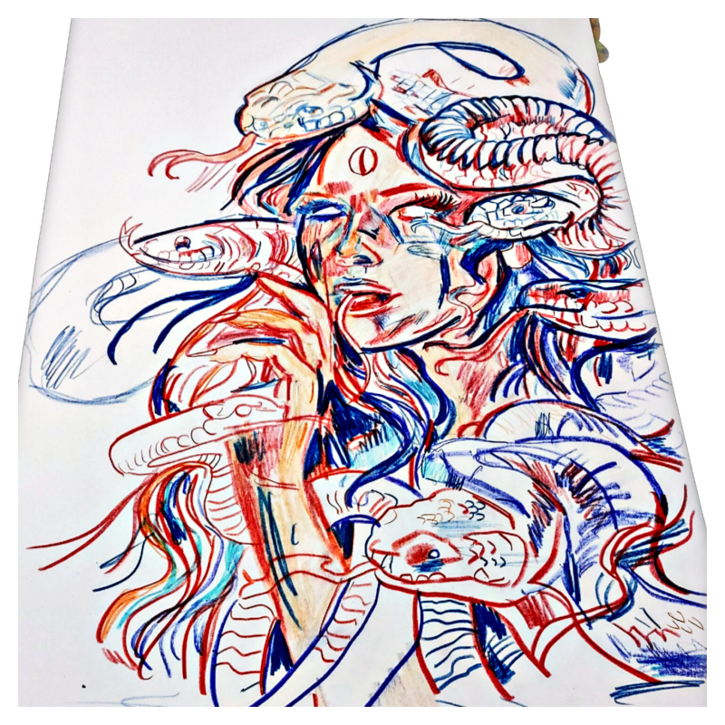

Traditional Style Eagle and Snake

An eagle who has caught a snake and is in a mid-air fight styled in Old School lines and colors.Traditional snake tattoos are known as representing a don't-tread-on-me sensibility, thus warding off evil, misfortune and danger. The eagle and the snake both are powerful symbols. This original art would make a striking tattoo.
Medusa
This Neo-Traditional Medusa will make a breathtaking tattoo. It is meant to be large and bold! Medusa was a mythological Gorgon who had venomous snakes in place of her hair. It was said that she could turn people to stone by merely looking at them. This would make a great tattoo!
Column 3

This tattoo is a Neo-Traditional style wolf with a snake, two sabers, and some lush greenery. The quote, from a Dylan Thomas poem titled "Do not go gentle into that good night" is motivational and inspiring. This would make a good tattoo on the back or the stomach.